Every Grandstream phone.
On one desk.
…because sixty web pages aren't a dashboard.
PhoneDesk logs in to your GRP and GXP phones through their own web interface and shows what's offline, what isn't registered and what's set wrong. Templates for bulk settings, provisioning files, firmware updates and a history of every phone's settings included.
Free · Source on GitHub · Phone web API only · Nothing leaves your computer · Not affiliated with Grandstream
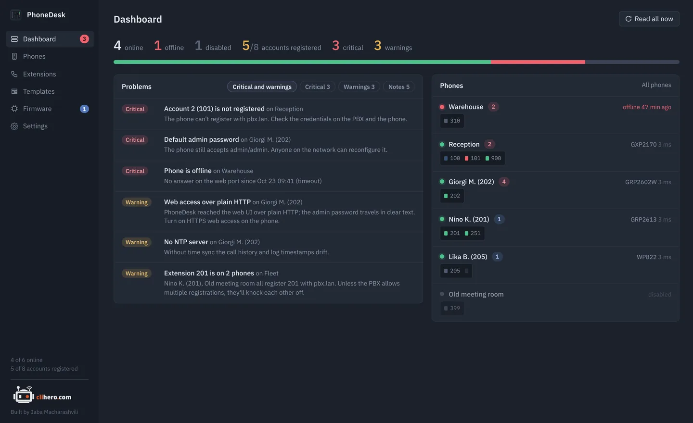
01 / Dashboard
The morning check, in one glance.
Online and offline counts, registered accounts out of active ones, and every problem sorted by severity. Each phone is drawn with one LED per SIP account. Green is registered, red is not, grey is switched off, and blue blinks while a line is in a call.
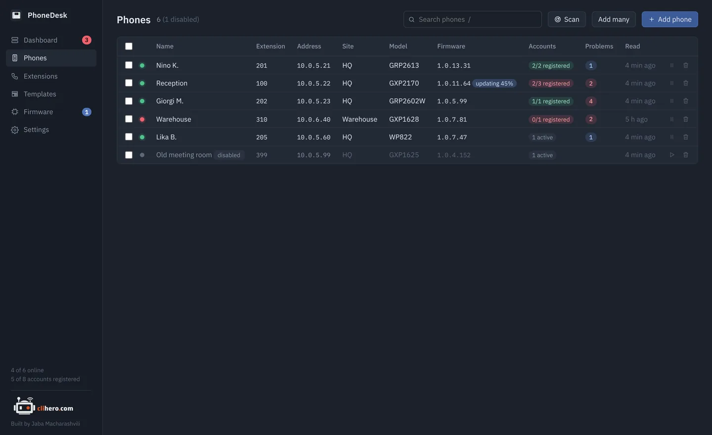
- Search that combines.
hq unregisteredfinds phones at the HQ site with an account down. Press/to jump there. - Bulk actions. Tick phones to read, reboot, apply a template, update, disable or delete them together.
- Find them. Scan a network, paste a list with
name, addresspairs, or add ranges like10.0.5.20-60.
02 / Problem checks
It notices what you'd only find one phone at a time.
Every phone is re-read on a schedule and checked against the same rules. The problems land on the dashboard, sorted by how much they matter.
Phone offline, web login refused, a read that didn't finish.
An account that can't register, an active account with no SIP server, a phone with no account at all, the same extension on two phones.
The factory admin password still accepted, web access over plain HTTP, Telnet or SSH open.
No NTP server, no syslog server, DHCP option 66 free to point the phone somewhere else.
A newer image for the phone's family waiting in your library.
A phone that hasn't been read in hours, so you know when the data is old.
03 / Phone detail
Everything a phone knows, without the web page.
Model and every firmware component, MAC, uptime, network and time settings, a management access checklist, each SIP account with its registration state, and the live state of every line key. The Settings tab shows the phone's values with their names next to the P-values. A console reads and writes any value and dials a number.
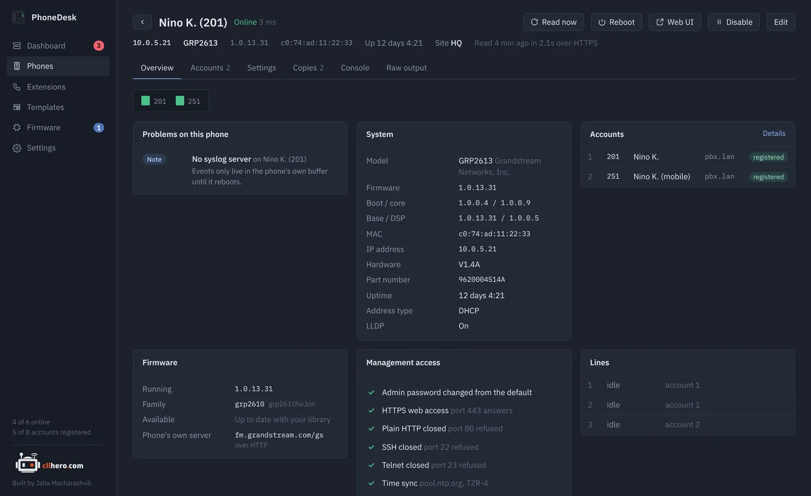
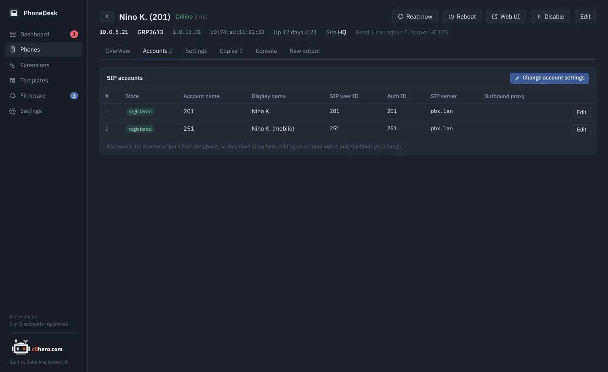
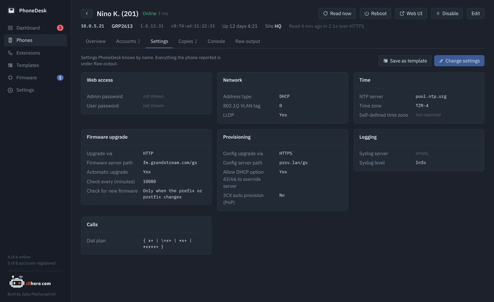
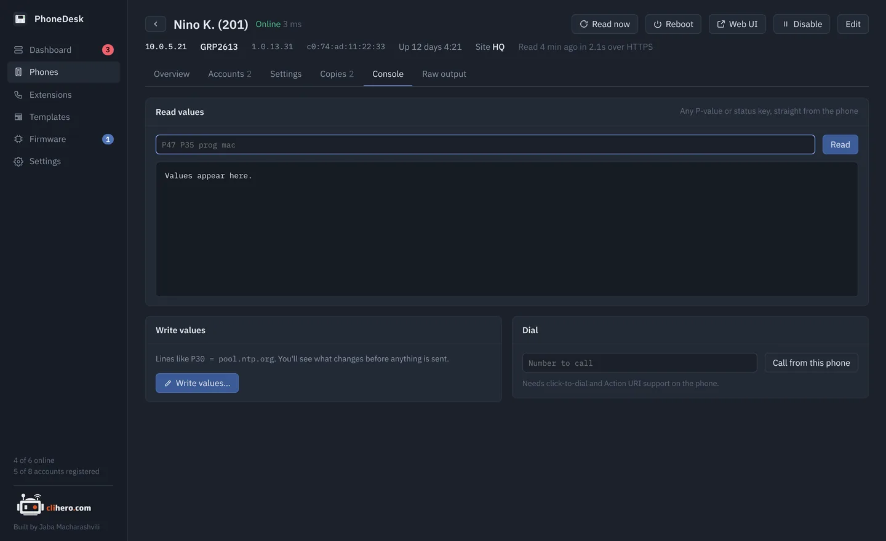
04 / Templates
Write it once. Review it per phone. Apply.
A template is a list of P-value = value lines, picked by name or typed by number. Apply it to any number of phones: each one is read first and you see exactly which values would change where, and only then are they written. Tick a box to reboot the phones afterwards.
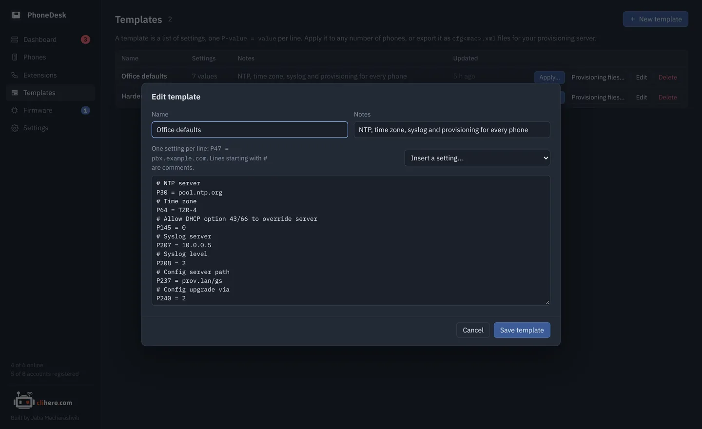
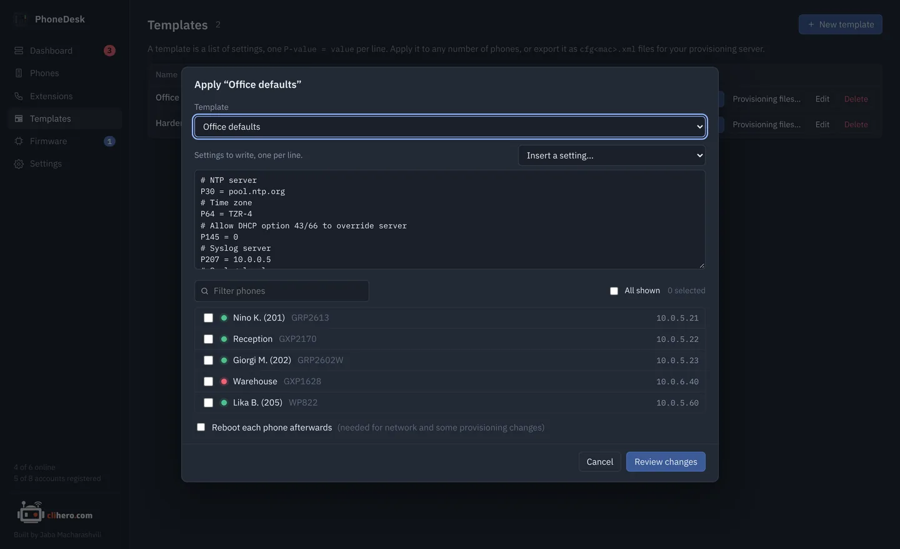
- Provisioning files. The same template exports as
cfg<mac>.xml, one per phone, for a provisioning server of your own. - From a golden phone. Save any phone's current settings as a template and make it the standard.
05 / Extensions
Which desk is 214?
Every SIP account across every phone in one table: extension, display name, state, phone, server. Search it, and spot an extension that's registered from two desks before the PBX starts bouncing them.
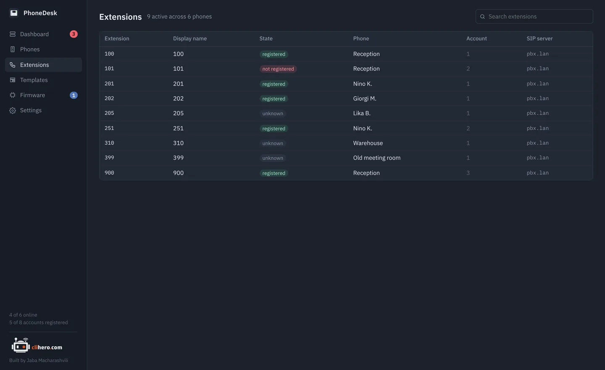
06 / Firmware
Firmware updates that watch the phone come back.
Keep images in a library, see which phones have something newer, tick them and update. Each phone is pointed at the image, rebooted, and watched while it downloads and installs; then PhoneDesk checks the running version and puts the phone's previous upgrade settings back. One phone at a time, so a bad image can't take the office down.
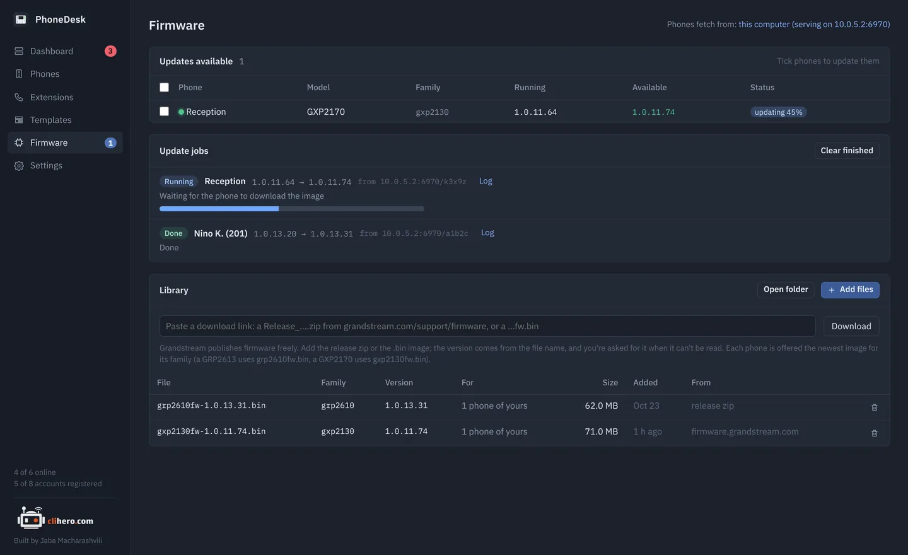
- Paste a Grandstream link. A
Release_….zipor a bare…fw.bingoes straight into the library. - Matched by family. A GRP2613 gets
grp2610fw.bin, a GXP2170 getsgxp2130fw.bin. Nothing is ever downgraded. - Your choice of source. Serve from this computer, point phones at Grandstream's server, or at one of your own.
07 / Settings history
What changed on that phone? Compare it.
A copy of each phone's settings is saved every time they change. Pick any two and see them side by side, or write an older copy back to the phone.
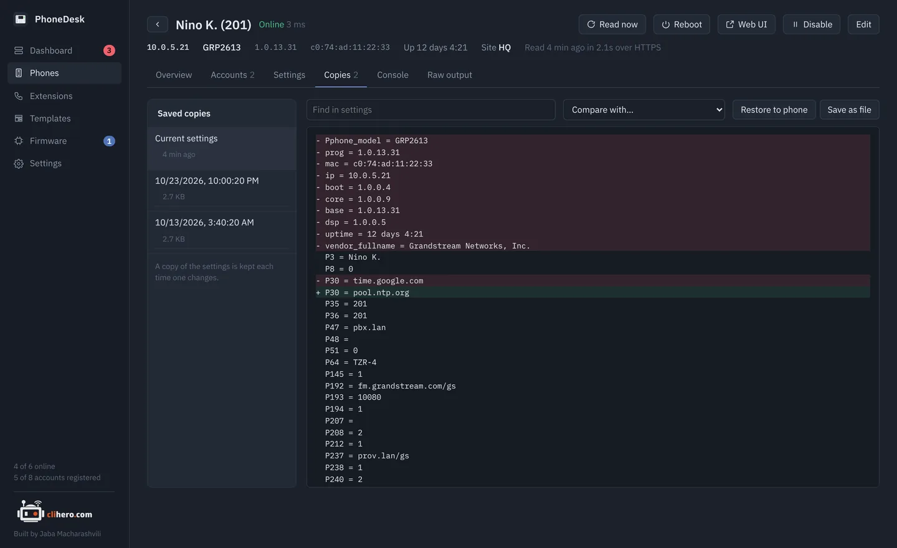
08 / Your data
On your computer. Nowhere else.
No account, no cloud, nothing installed on the phones. Everything lives in one folder you choose, and moving to another computer is one passphrase-protected file.
GRP, GXP and friends.
All a phone needs is its web interface switched on and the admin password. Registration state needs Action URI support turned on in the phone's web UI.
GRP2601, 2602, 2603, 2604, 2612, 2613, 2614, 2615, 2616, 2624, 2634, 2636, 2650, 2670
GXP2130, 2135, 2140, 2160, 2170, GXP1610 to 1630, GXP1760, 1780, 1782
GXV33xx and GXV34xx video phones, WP8xx and DP7xx cordless, HT8xx adapters. Same web API; line status may be missing.
Pick your platform.
Free. Built from the source on GitHub by GitHub Actions on every release.
- Chip
- Apple Silicon and Intel
- Version
- Latest
- File
- .zip with PhoneDesk.app
- Size
- –
- Build
- Universal
Not notarized yet: right-click the app and choose Open the first time.
- Chip
- x64
- Version
- Latest
- File
- .zip with PhoneDesk.exe
- Size
- –
- Needs
- Windows 10 or 11
SmartScreen may warn about an unknown publisher: More info, then Run anyway.
- Language
- Go 1.23+
- UI
- Wails v2, plain HTML/JS
- Code
- github.com/jaba0x/PhoneDesk
- Tests
go test ./internal/...- Needs
- Xcode CLT on a Mac
A phone that's misread makes a good test case: its Raw output has everything.
Frequently asked questions
Does it change anything on my phones?
Reading is read-only. Settings change only when you apply a template or write values from the console, and both show you the exact changes per phone first. A firmware update sets the phone's upgrade server for the duration and puts the previous setting back afterwards.
Do I need a provisioning server or GDMS?
No. PhoneDesk logs in to each phone's web interface, the same way you would in a browser. If you do run a provisioning server, templates export as cfg<mac>.xml files for it.
Why do my accounts show as "unknown"?
Registration state comes from the phone's line status, which the phone only shares when Action URI support is turned on in its web UI. Switch it on and read the phone again. Everything else works without it.
Where are my passwords stored?
In the data folder on your computer, encrypted with AES-GCM using a key only your user account can read. Nothing is sent anywhere else.
Will firmware updates work over a VPN or zero trust access?
Grandstream phones download firmware themselves. By default they download from your computer, which has to be reachable from the phone. If it isn't, point updates at Grandstream's public server or at a server of your own, in Settings.
How many phones can it handle?
It's built for a few dozen to a few hundred. Reachability is checked every 30 seconds and each phone is re-read every 15 minutes, four at a time; all of that is adjustable.
It misreads my phone. What now?
Open the phone, copy what the Raw output tab shows and post it in GitHub Discussions or as an issue, with the model and firmware version. That's exactly what's needed to fix it.
Is this a Grandstream product?
No. PhoneDesk is an independent project, free to use, with its source on GitHub. Grandstream, GRP, GXP and GXV are trademarks of Grandstream Networks, Inc.